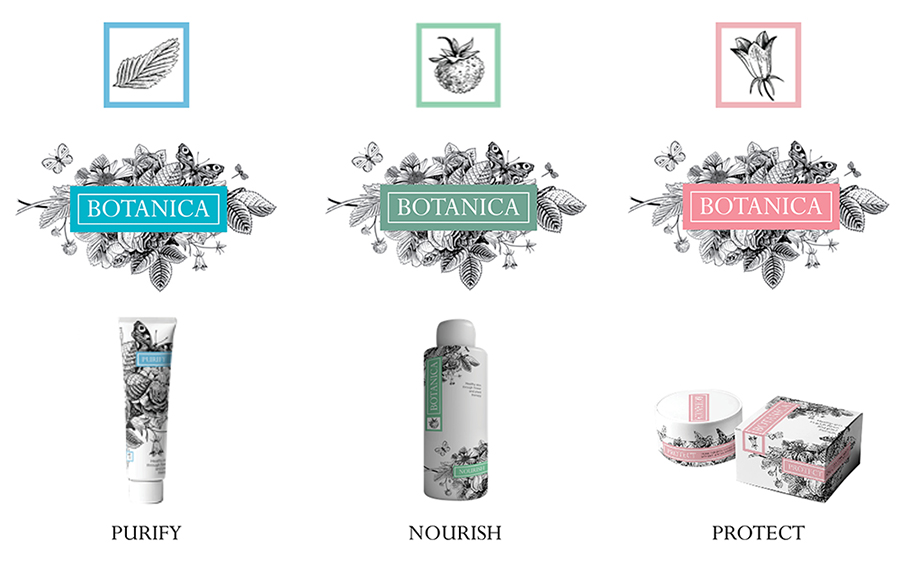
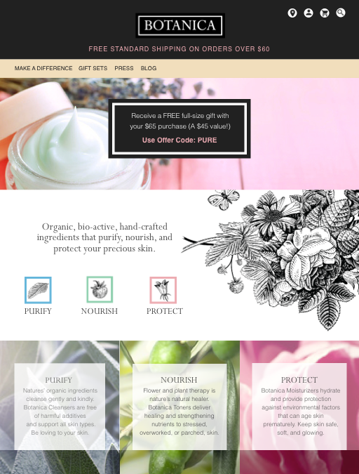

Botanica is a proposed line of skincare products made with botanical ingredients derived from organic herbs, fruits, and flowers. It’s skincare that I would love to find on the shelves of my local co-op.
Brand Development
I created the name, brand, product mockups, and e-commerce website. Following are preliminary thoughts and rough sketches for development of the brand.
Preference Test
I created a Preference Test on UsabilityHub for these two logo options which I finalized in Illustrator. The line art of flowers, fruit, and insects was the overwelming preference with 84% of the respondents preferrring it.
Low Fidelity Prototypes & Userflows
For the e-commerce site I started with low fidelity wireframes in Sketch3 to work out the basic layout and to determine some user flow. Since the word, Botanica, does not immediately say what the product is, I planned for a hero image to provide a quick visual explanation of the product.
Brand Application & Product Mockups
The product line has three main categories which are a cleanser, a toner, and a moisturizer. I created category names that reflect the benefit of each category - Purify, Nourish, and Protect. With these three categories I created a color palette of aqua, mint, and pink that communicates which category each product fits into. The three different colors of the logotype area helps the user identify the product category.
High Fidelity Wireframes
On the landing page the call-to-action is immediately highlighted with framed content in the center of the hero image. This frame replicates the graphic feel of the logo and is where the changing promotions appear. The hero and CTA are followed by a brief description of what Botanica is with icons that also appear on the packaging. Text explains the benefits of the products with visual cues for the user to purchase. The product slide at the bottom is another opportunity to shop.
I changed the hero image to a product shot to more quickly convey the purpose of the product. I combined the product line descriptions with background imagery to reinforce the products’ ingredients - herbs, fruits, and flowers.
If I had more time I would source containers and boxes, print the packaging labels and boxes, and style and photograph the products. I think that organic and naturally-derived products are really gaining popularity and are on the minds of discerning consumers. Maybe an enterprising manufacturer of natural beauty products would like to collaborate?